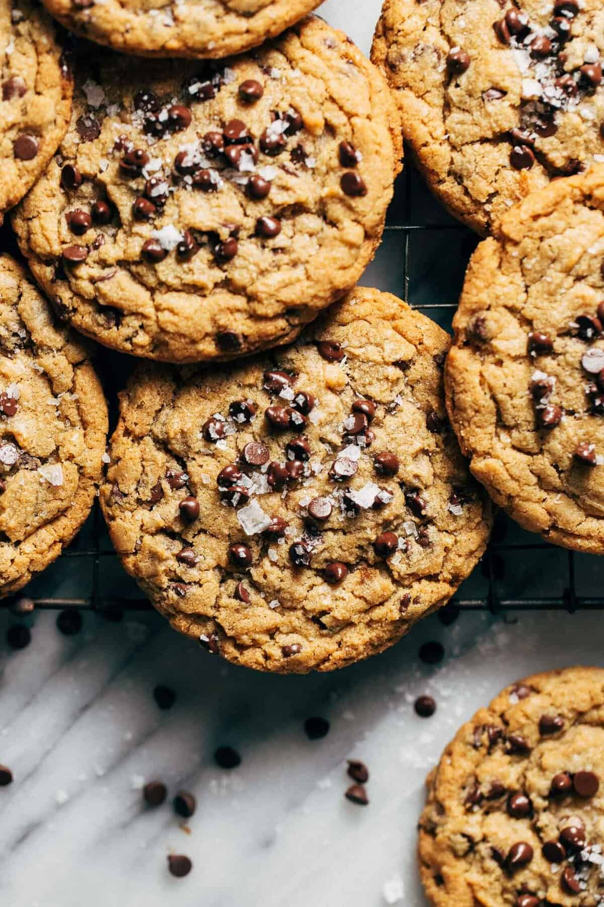

Peanut Butter Chocolate Chip Cookies

Soft and Chewy Peanut Butter Chocolate Chip Cookies
Peanut butter cookies date back to the early 1910's; invented by George Washington Carver. The concept was first introduced when Carver published and released a peanut cookbook titled "How to Grow the Peanut: And 105 Ways of Preparing It for Human Consumption". This was meant to promote peanut growth, Carver found many promising benefits from the versitility that peanuts offer.
This recipe calls for a little patience. It's best to chill the dough for 20 minutes before scooping. When scooping the dough use cookie scoops and do not roll into smooth balls, rolling can change the consistency and texture of the cookie. I personally like a little flaky salt to add a little pizzaz. This recipe is a classic for anyone not allergic to peanut butter. This recipe has a deep place in my heart, and I know my man will love them everytime.
Ingredients
- 1 cup All-purpose flour
- 1/2 tsp baking soda
- 1/2 tsp salt
- 3/4 cup light brown sugar
- 1/2 cup granulated sugar
- 1/2 cup unsalted melted butter
- 1 large egg
- 1 tsp vanilla extract
- Flaky sea salt for sprinkling
Instructions
- In a bowl mix together dry ingredients including the flour, baking soda, and salt.
- In a seperate bowl whisk together peanut butter, melted butter, and sugars until smooth.
- Mix in egg and vanilla until combines
- With a rubber spatula fold in dry ingredients until the dough comes together - do not overmix.
- Fold in the chocollate chips
- Chill dough in fridge for 20 minutes
- Line a small cookie sheet with wax or parchment paper.
- Using a large 2 oz cookie scoop or (1/4 measuring cup) scoop out the dough and set them by side on the cookie sheet. Dont roll the balls just scoop and plop. If you want smaller cookies make sure to reduce baking time.
- Chill dough on sheets for 4 hours or as long as you can stomach the wait. The longer the better.
- If you'd like top with mini chocolate chips before baking
- Preheat oven to 350F and space cookies on a lined baking sheet approximately 3 inches apart (about 4-5 cookies at a time) and bake for 12-15 minutes or until the edges are a light golden color and the center looks slightly underdone. Bake one batch at a time.